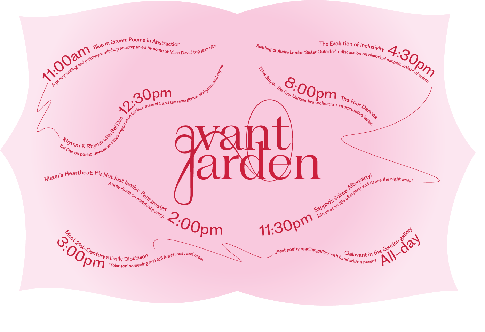
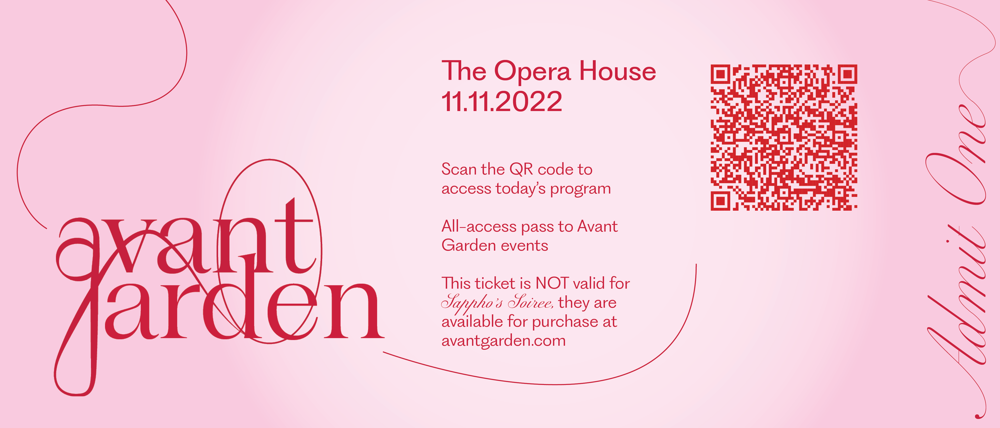
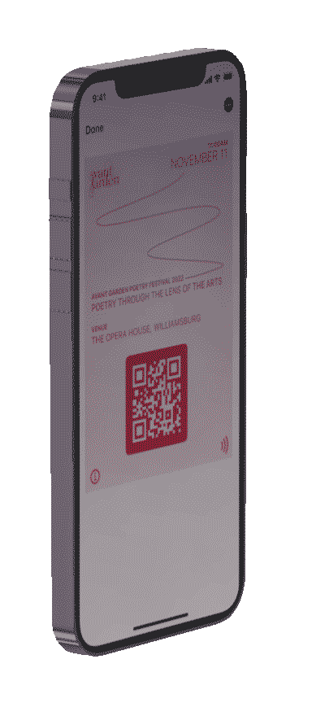
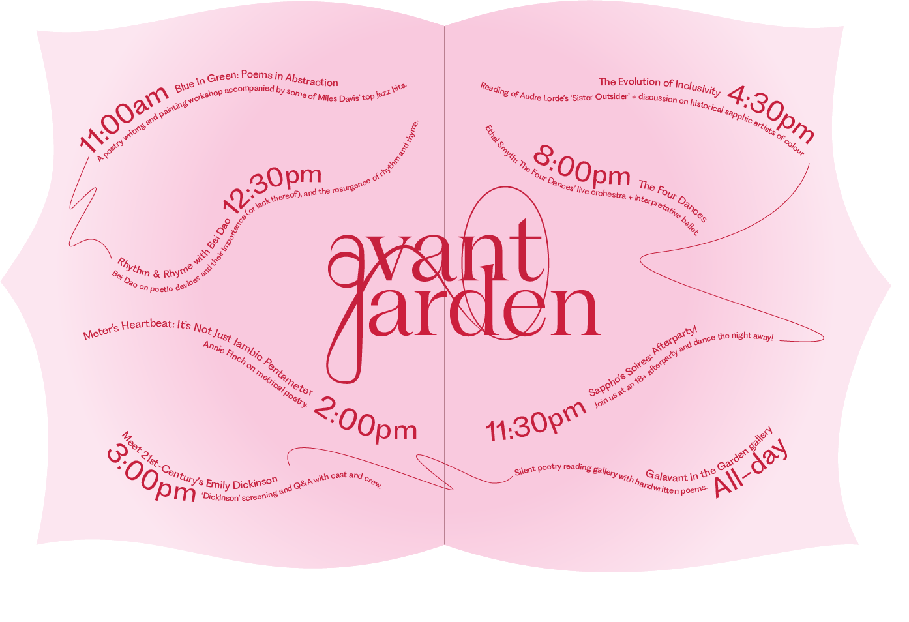
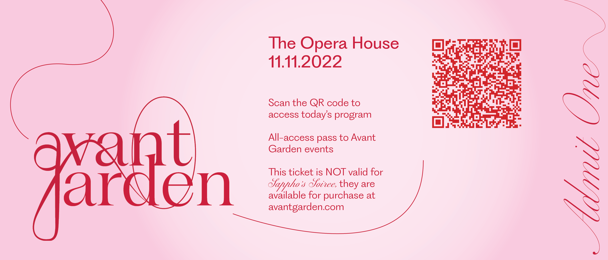
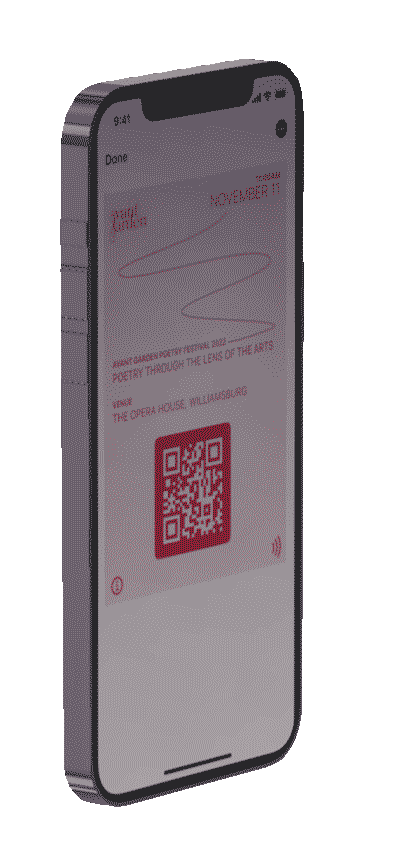

Avant Garden: Poetry through the Lens of the Arts
A poetry festival geared toward sapphics of colour, Avant Garden takes inspiration from beauty, raw emotions and the culmination of the two in Sappho's poetry; I chose the colour scheme of light pink and burgundy because I wanted to capture that essence. Where the pink brings in delicacy and grace, the red brings in the idea of blood and emotion. The two play amongst each other, the pink taking the place of skin and the red taking the place of ink.
The logo is a combination of the letters 'A' and 'G,' accompanied by the influence of Sappho's lyre and an oval around it to represent the emotional mirroring of poetry. Along with being invites and posters, all 3D elements would be projected and/or present in the event space itself. The gold, because to me gold jewellery represents Indian femininity. Mirrors, because the idea of seeing our own unfiltered reactions to experiencing poetry is a way to witness the physical representation of our interpretations.
The logo is a combination of the letters 'A' and 'G,' accompanied by the influence of Sappho's lyre and an oval around it to represent the emotional mirroring of poetry. Along with being invites and posters, all 3D elements would be projected and/or present in the event space itself. The gold, because to me gold jewellery represents Indian femininity. Mirrors, because the idea of seeing our own unfiltered reactions to experiencing poetry is a way to witness the physical representation of our interpretations.